SOEN 357: Designing for AI Transparency and Trust - STM Neo
Ethan Briffett 40246505
Ana Rostam 40187433
Victor Pereira - 40211929
Understanding the Problem
Artificial Intelligence was largely seen as a gimmick when it was first introduced to the public, creating videos and images that had no sense of the real world. Eventually, AI surpassed this gimmick stage and has become an actual tool that people may use. Some use it to draw images, create fake videos, or to answer their questions, all with data gathered from the internet. Distrust in AI, however, comes from users worrying how the information is gathered, erroneous answers, and how they actually created that answer with the information online. AI sometimes cannot differentiate facts from misinformation on the internet and this can lead to those that over-rely on AI to make more mistakes in day to day life. On the other hand, underreliance in AI will lead to more load being put onto the human side, possibly leading to human error, or just taking an increased amount of time that isn’t necessary when using AI as a tool.
To bridge this gap between human and AI, there needs to be more transparency on the AI side to show how they got their answers, whether by showing counter examples, sources for their information, or making a summary of what they had found after giving all their info. Chat GPT does this quite well. An easy way to give its users an idea on how it reached its decisions could be a decision tree where, when asked, the app could show a step by step way of how it came to its conclusion. Giving users this transparency on why or why it didn’t choose a specific route will help build some trust as well. With a large and diverse number of people using AI, it needs to be able to adapt to all sorts of people and their needs; Some people have different levels of literacy or are less technical than other users.
Research/Analysis
Other Products
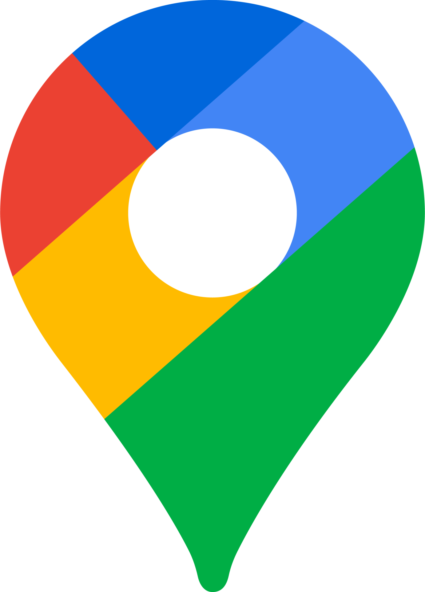Google Maps
An existing tool that is used very often is Google Maps. This app works very well in creating routes for users with a personal vehicle, a bike, on foot, or with public transportation. Google Maps will allow users to create multiple routes for multiple modes of transportation as well as showing which public transit lines are needed and at what time to catch each bus/train/métro/REM.
The implementation is very well done, taking info from other drivers and users via reports for delays, accidents, and other traffic concerns. It also has a lot of accessibility options to allow users to use the app even when the phone isn’t in their hand. However, it doesn’t provide an outlet to pay for tickets, fares or other ways to use the STM metro system that requires payments in order to use.
Google Maps doesn’t seem to have an AI that you can directly interact with, but their map routing tool most likely pulls solutions from AI models to generate your routes based on data gathered.
Waze
Waze is a very useful driving app for drivers as it is a community built tool that focuses users making reports to help each other. At any point in time, roads around the user's current location will be color coded in real time to show how much traffic is in a current location. The only issue here is that it is primarily an app for drivers and doesn’t have any implementation for public transportation. The app also allows for users to edit the map itself if the app has false map data.
Several years ago, Google, who had acquired Waze, had implemented Google Assistant, which was mainly for voice activated features so that you don’t take your hands off the wheel. Seeing as Waze is part of Google, it is entirely possible that its routing is also generated by a Google AI in the backend, but there isn’t an AI that the user can directly interact with and ask for advice.
Chrono
The Chrono app is the closest thing to what is wanted here. This app is purely meant for the Montreal area and has schedules for Bus, Metro, REM, River Shuttles, and trains. There is even a page where you can check for Bixi bikes, Communauto and Communauto FLEX, as well as places to purchase tickets. Not only that, but the app also connects to the phone's built-in NFC scanner to then scan a user's OPUS card. From there, they can read what tickets, fares, or packages fares they may have purchased and loaded onto the opus as well as purchase new ones and scan them onto your OPUS card from your phone.
The Chrono app is fully created for Montreal travel and so it has a lot of official data from STM resources. However, it does not show you how it came to its conclusion. The software also does not use any AI and you will need to simply trust the app’s generated planned routes for where you want to go, and you will need to know most of the info for which zones you need to purchase fares for beforehand.
Data Collected
A survey was conducted by posting a Google form to various university Discord servers. From it, the following data was obtained.
Public Transit Confidence

Overall, most users seem quite confident in their current ability to use public transit to get where they need to go. Only a very small portion of those were somewhat unconfident.
Trust in AI Assistance in Public Transit Navigation 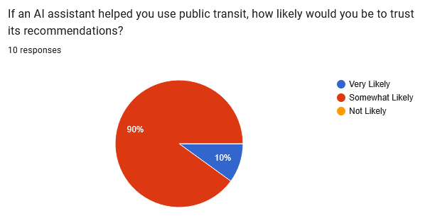
As for whether individuals would trust the use of an artificial intelligence to aid in public transit route planning, the result was nearly unanimous with most people remaining somewhat skeptical in its use.
Confidence in AI Choices 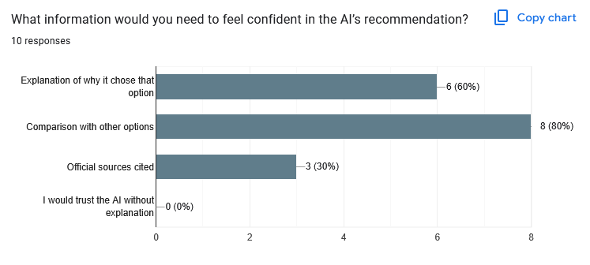
Individuals were then asked to list what they would need in order to feel confident in the output of a given model. The consensus is that nobody would trust an artificial intelligence outright without explanation, but rather build confidence through its use of explanations, comparing multiple options, and citing official sources where necessary.
AI Concerns 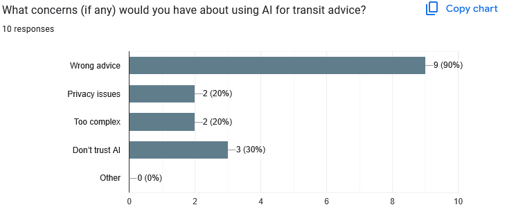
Users were then asked to voice their concerns with the usage of artificial intelligence. The top result with 90% of people selecting it was the potential for the model to give wrong advice.
Difficulties
Additionally, users were prompted to voice their most significant difficulties in planning trips and buying fares. The most prevalent were the following:
- Issues of traffic condition monitoring.
- Delays in the buses/métros themselves.
- Prices.
- Long wait times.
- Having to use multiple apps to check routes and information regarding transit.
Personas
Based on the data retrieved, three personas were created in order to better reflect the potential user base.
Persona 1: Busy Student
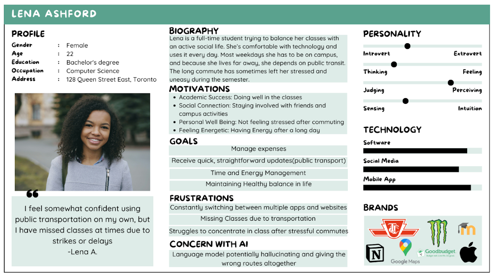Persona 2: Full-Time Worker
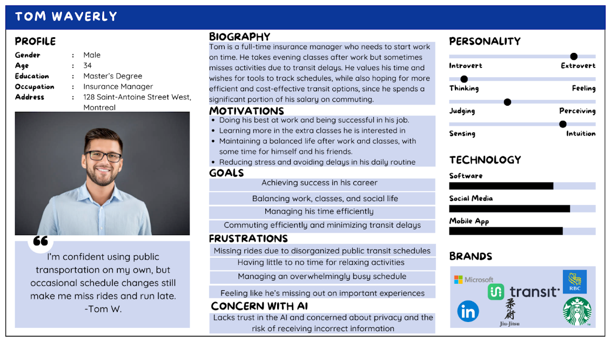Persona 3: Elderly Retiree
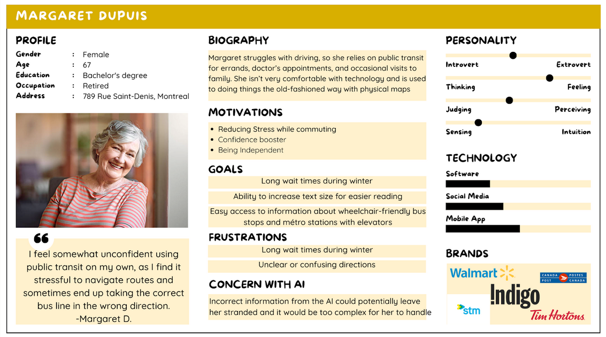User Goals
A user would use this application to figure out the most efficient way to travel in and around Montreal via public transit. This could mean showing how to get from one location to another at a specified arrival time and which modes of public transport should be taken. The user would also want to have the ability to purchase tickets for the STM, no matter which kind of transport they are taking (Bus, Train, REM, Métro). If users have any questions or specific conditions, they should be able to ask an in-built AI to solve their transport issues/needs.
Users should be able to trust this app because the data of pricing, tickets, scheduling will all come from official resources like the STM website that shows all schedules for every train, Bus line, metro, and rem, while also warning of delays and cancellations in real time.
A user would also need to see how the AI came to its conclusion when coming up with a route. A feature can be implemented to show a decision tree with the press of a button, indicating why it chose one option over the other, and perhaps even allows the option to choose a different option if the User prefers it.
Possible errors may show up in terms of blocked roads, accidents, delays and or cancellations of possible routes or lines. Some of these errors can be due to random accidents that are impossible to predict. And other errors can be due to STM website miscommunications with the application. There should be a way for the User to check accident reports or a direct link to double check the Schedules for trains, buses, metro or Rem.
As for Data privacy, the user should be allowed to select whether the app can harvest/share location data or whether the app is allowed to use the users location at all times or only when using the application as well. Additionally, the app and model will be open-source, allowing anybody to verify any aspect of how it works.
User Journey
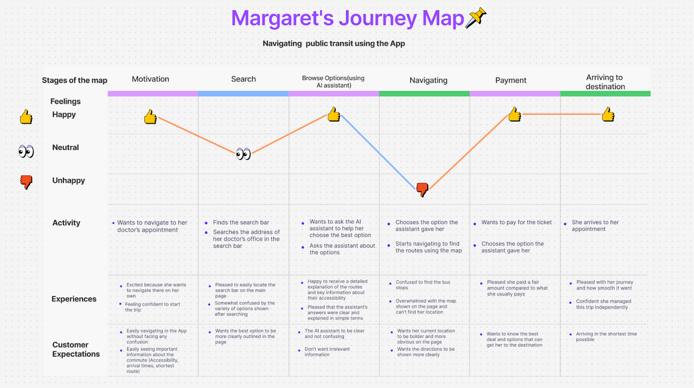Storyboard
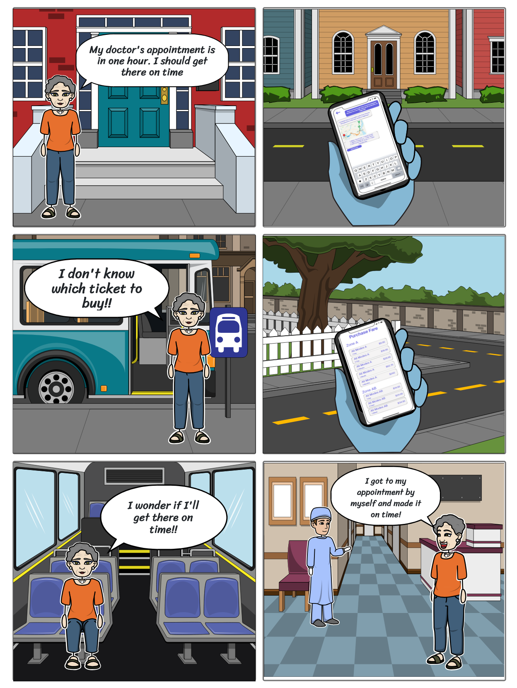User Flow
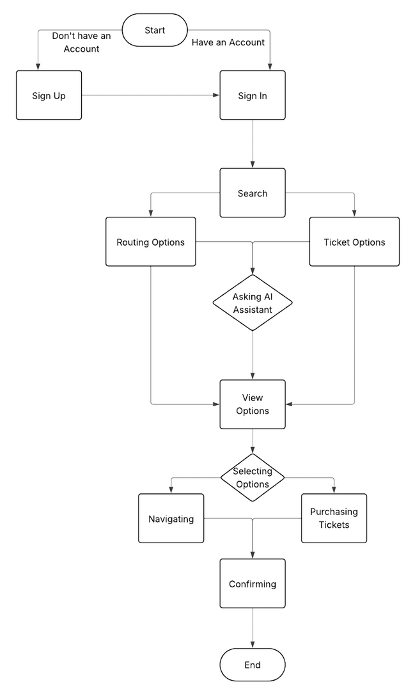Empathy Map
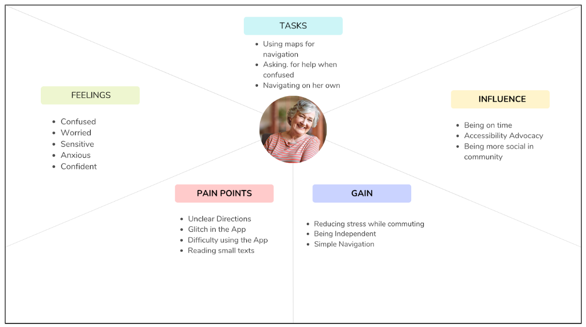Prototyping
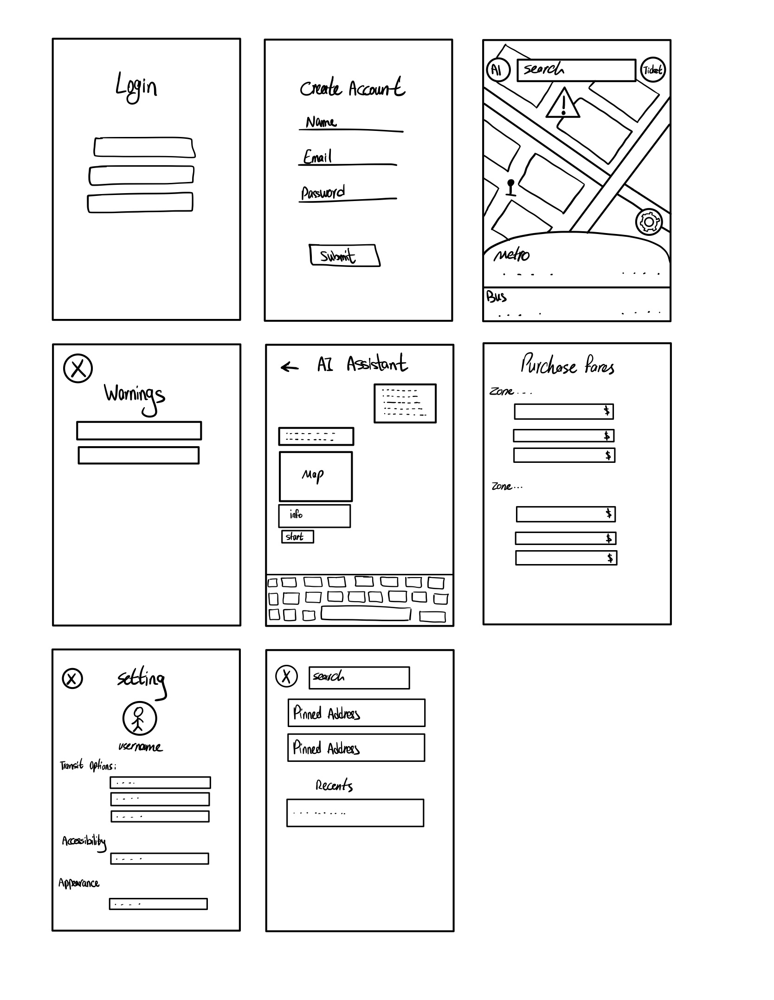 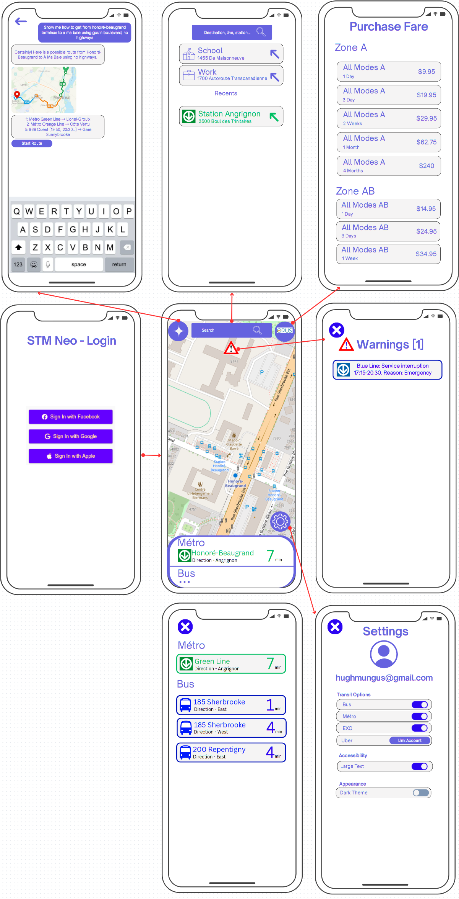Style Guide
The style for this app will be a very clean and minimalistic style with very easy to read buttons and not too many colors. The main color scheme will be a plain white with a deep purple/lilac sort of color for accents. A dark mode will also be available to users in the settings which reverses the colors to a darker grey background with paler purple colors.
The app logo/icon also follows this. However, it also adds a bit of pink gradient in order to catch the eye.
Font-wise, the Open Sauce One font was used for two main reasons. The first being the fact that it is not overly decorative or ornamental (and thus easy and comfortable to look at), and the second being that it is a freely licenced font, as a subtle way of reinforcing our commitment to transparency and open-source.
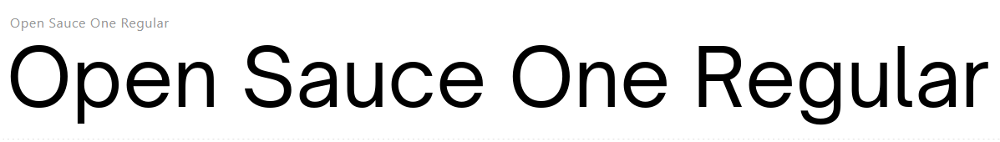